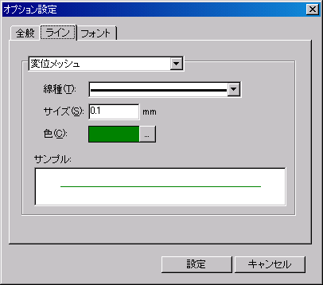
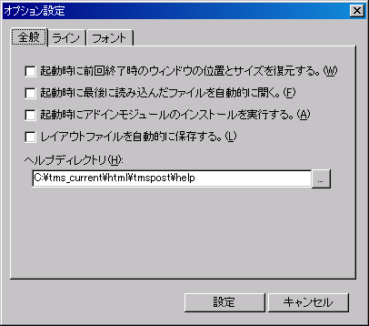
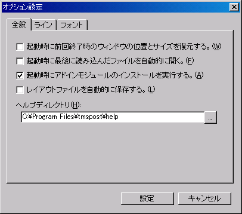
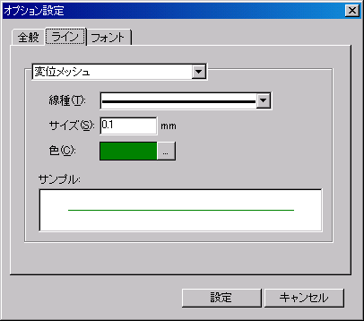
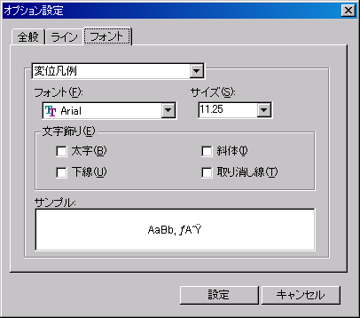

以下の項目のラインに関する設定を行います。変更したい項目を選択後、各種設定を行います。
- 変位メッシュ
- 変位前メッシュ
- ベクトル

以下にデータ系列に指定できる項目を示します。＜参照＞ボタンをクリックすると、[色の設定]ダイアログボックスが表示され、色の設定を行うことができます。
 |
||||||
| 任意色 | ||||||
| 任意値 | ||||||
マーカーと線のサイズに関する設定値の目安を以下に示します。
| 細い | 0.5 |
| 普通 | 1.0 |
| 太い | 2.0 |
メイン画面メニューの[ツール]−[オプション]を選択すると、下画面のオプション設定画面が表示されます。オプションに関する設定を行います。オプションはTms Postで共通の項目に関する設定であり、次回起動時にもそれらの設定は有効です。


以下の項目のラインに関する設定を行います。変更したい項目を選択後、各種設定を行います。
- 変位メッシュ
- 変位前メッシュ
- ベクトル

以下にデータ系列に指定できる項目を示します。＜参照＞ボタンをクリックすると、[色の設定]ダイアログボックスが表示され、色の設定を行うことができます。
線 種類 色 任意色 サイズ 任意値
マーカーと線のサイズに関する設定値の目安を以下に示します。
線 内容 値 細い 0.5 普通 1.0 太い 2.0
以下の項目のフォントに関する設定を行います。フォント種類、サイズ、文字飾りの設定を行います。変更したい項目を選択後、各種設定を行います。
- 変位凡例
- ベクトル凡例
- コンタ凡例
